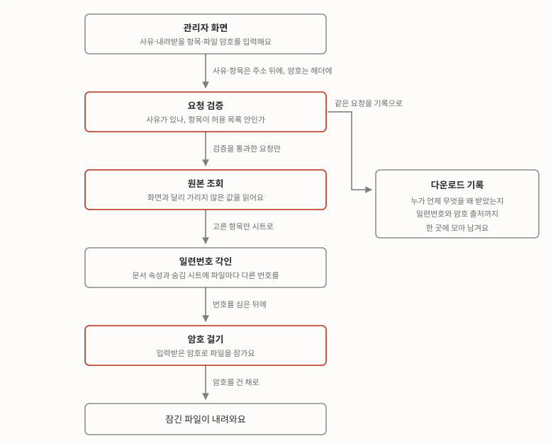
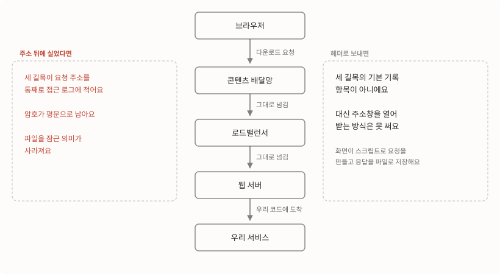
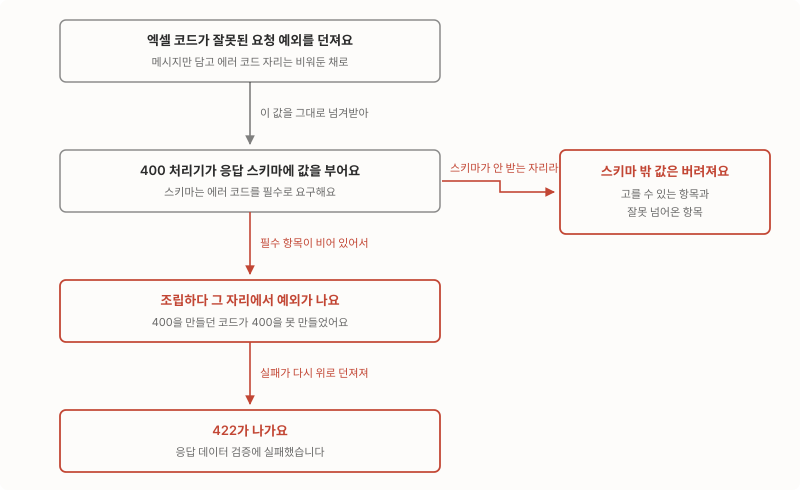

관리자 엑셀 다운로드에 개인정보 통제를 넣으면서, 파일 암호를 주소가 아니라 요청 헤더로 받기로 했어요. 기능을 다 만든 뒤 개발 환경에서 끝에서 끝까지 찔러보니 400을 보낸 자리에서 422가 나가고 있었어요. 잘못된 요청을 알리는 응답을 만들다가 그 응답이 규격에 안 맞아 실패한 거였죠. 같은 통제를 화면마다 붙여나가던 중에 일주일 내내 조용히 실패하던 다운로드도 하나 찾았고요.
관리자 화면의 [엑셀 다운로드] 버튼은 만들기 쉬운 기능이에요. 목록 조회 결과를 시트에 붓고 파일로 내려주면 끝이니까요. 그런데 그 시트에 이름과 휴대폰 번호가 들어가는 순간 이야기가 달라져요. 더 이상 다운로드 기능이 아니라 개인정보가 회사 밖으로 나가는 통로니까요.
이번 주에 한 건 사내 SaaS 어드민에 이미 깔려 있던 개인정보 통제를 회원 목록까지 넓히고, 파일 암호를 받는 방식을 바꾸는 일이었어요. 기능 자체는 명세대로 만들면 되는 일이었는데 정작 시간을 쓴 곳은 따로 있었어요. 암호를 어디에 실어 보낼지, 에러를 어떻게 돌려줄지 같은 것들이요.
아래는 다운로드 한 번이 지나가는 길이에요. 그림에서 다른 색으로 표시한 세 자리가 이번 주에 손댄 곳이에요. 이 글은 그 자리마다 무엇을 놓고 무엇을 포기했는지, 셋을 다 손보고도 남아 있던 문제는 뭐였는지를 다뤄요.

출발선에는 이미 통제 한 벌이 깔려 있었어요
이번 작업은 맨땅에서 시작한 게 아니라 2주 전에 깔아둔 통제 위에 얹는 일이었어요.
그때 넣은 건 네 가지예요.
- 화면 목록의 값을 가려서 보여줘요. 최고 등급이 아닌 관리자에게는 이메일과 휴대폰을 가린(마스킹한) 응답을 내려줘요.
- 개인정보 컬럼은 부분 일치 검색이 들어와도 완전 일치로 바꿔 처리해요. 주민등록번호는 앞 7자리만 받고 뒤 6자리는 아예 저장하지 않고요.
- 엑셀 파일을 서버에서 만들고 암호를 걸어요. 화면에서 조립하던 것을 서버 생성으로 옮기고 Office 표준 암호를 걸었어요.
- 기록을 한 곳으로 모아요. 일련번호, 받아간 사람, 사유, 고른 항목, 가림 여부를 건건이 남기고 다운로드 내역을 조회하는 API를 따로 뒀어요.
셋째 항목에는 이름을 붙여둘 장치가 하나 더 붙어 있어요. 다운로드마다 고유 번호를 발급해 문서 속성과 숨김 시트 양쪽에 심어두는데, 이걸 일련번호 각인이라고 부를게요. 파일 하나가 밖에서 발견됐을 때 그게 누구의 어느 다운로드였는지 되짚기 위한 장치예요.
어드민 전 요청에 감사 로그 미들웨어도 붙였는데 응답 본문은 저장하지 않기로 했어요. 개인정보가 실린 응답을 로그에 한 벌 더 복제하는 셈이 되니까요.
문제는 이때 정한 암호 규칙이었어요. 다운로드하는 관리자의 휴대폰 뒤 4자리에 공통 패스워드를 붙여 자동 생성하는 방식이었죠. 이번 주에 가장 먼저 손댄 게 이 규칙이에요.
암호는 주소가 아니라 요청 헤더로 받아요
첫 번째 설계는 헤더 암호예요. 파일 암호를 주소창이 아니라 요청 헤더로 받는 거요.
자동 생성 규칙은 만들기 편하지만 문제가 둘 있어요. 공통 패스워드는 한 번 새면 전 직원이 받은 모든 파일이 함께 열리고, 휴대폰 뒤 4자리는 파일을 받은 사람만 아는 값이 아니거든요. 그래서 다운로드하는 사람이 그 자리에서 암호를 직접 입력하는 방식으로 바꾸기로 했어요. 여기서 질문이 하나 생겨요. 그 암호를 서버로 어떻게 보낼까요.
엑셀 다운로드는 GET 요청이에요. 조회 조건을 이미 주소 뒤 물음표에 붙여 보내고 있으니 암호도 같은 자리에 태우는 게 자연스러워 보여요. 그런데 그 자리는 주소의 일부고, 주소는 지나가는 길목마다 기록으로 남아요.

콘텐츠를 대신 배달하는 배달망, 트래픽을 나눠주는 로드밸런서, 그 뒤의 웹 서버가 각자 요청 경로를 통째로 접근 로그에 적어요. 암호가 거기 그대로 적힌다면 파일에 암호를 거는 의미가 없죠.
| 견줘본 것 | 주소 뒤에 실으면 | 요청 헤더로 보내면 |
|---|---|---|
| 암호가 남는 자리 | 세 길목의 접근 로그에 평문으로 남아요 | 세 길목의 기본 기록 항목이 아니라 남지 않아요 |
| 화면이 해야 할 일 | 링크 한 줄이면 끝나요 | 스크립트로 요청을 만들고 응답을 파일로 저장해야 해요 |
| 주소창으로 받기 | 주소만 알면 받을 수 있어요 | 값이 주소에 없으니 받을 수 없어요 |
표의 두 번째 줄과 세 번째 줄이 이 결정의 비용이에요. 다운로드를 링크 한 줄로 처리할 수 없게 되고, 화면 쪽이 반드시 스크립트로 요청을 만들어 응답을 파일로 저장해야 해요. 그 비용을 받아들이고 X-Excel-Password 헤더로 받기로 했어요.
암호 입력 창을 붙여야 할 화면이 다섯 곳이라, 그쪽이 따라올 때까지는 헤더 없는 요청을 거절하지 않고 옛 규칙으로 잠갔어요. 기획서 조건 하나를 의도적으로 비운 상태라, 어느 파일이 어느 규칙으로 잠겼는지는 기록의 암호 출처 값으로 되짚을 수 있게 했고요.
고를 수 있는 항목은 서버가 정해요
두 번째 설계는 항목 화이트리스트예요. 내려받을 수 있는 항목 목록을 서버가 들고 있고, 그 밖의 값은 요청 단계에서 거절해요.
이번 주에 새로 만든 건 회원정보 일괄 다운로드였어요. 사유와 항목을 둘 다 필수로 받고, 항목은 서버가 가진 13종 목록 안에서만 고를 수 있어요. 화면이 보여주는 체크박스 목록도 서버 목록과 키·순서를 1:1로 맞췄어요.
전량 조회는 새 조회 함수를 만들지 않고 기존 목록 조회에 페이지 크기 0을 넘겨 재사용했어요. 저장소와 모델은 한 줄도 건드리지 않았죠. 목록 화면이 걸어둔 검색 조건을 그대로 넘겨받으니 화면에서 보고 있던 범위가 그대로 파일이 돼요.
배선하면서 걸린 자잘한 것도 둘 있었어요.
- 경로 선언 순서를 지켜야 해요. 이 경로를 회원 상세 조회 경로보다 먼저 선언해야 매칭이 돼요. 나중에 선언하면 상세 조회 쪽이 먼저 잡아버려요.
- 감사 로그 미들웨어에서는 이 경로를 제외했어요. 다운로드 전용 기록이 이미 남는데 미들웨어까지 기록하면 같은 다운로드가 두 줄로 남으니까요.
항목 목록 자체도 이번에 정리해서 8종이던 항목이 13종이 됐어요.
화면은 가리고 파일은 원본으로 내려요
세 번째 설계는 화면만 가리기예요. 화면 목록의 가림은 유지하되 엑셀 파일에는 원본을 담아요.
여기서 잠깐 멈칫했어요. 가리는 게 통제인데 파일에 원본을 담는 게 맞나 싶었거든요. 정리하면 이래요. 화면 목록은 업무 중에 늘 열려 있는 곳이라 가리고, 엑셀은 애초에 업무를 하려고 받는 파일이에요. 가린 값이 담긴 파일은 쓸 수가 없어요.
엑셀은 최고관리자가 아니어도 원본을 담기로 했어요. 구현할 때 가림 플래그를 거짓으로 넘기는 대신 분기 자체를 지웠어요. 플래그를 넘기는 형태로 두면 어딘가에서 참으로 넘기는 호출부가 생기고, 그때부터는 어느 파일이 가려졌는지 알 수 없게 되니까요. 다운로드 기록에 남기던 가림 프로파일 값도 실제 상태에 맞게 정정했어요.
파일이 원본이라는 걸 받아들이는 대신 파일 쪽 통제를 세 겹으로 뒀어요.
- 항목 화이트리스트로 필요한 열만 담아요.
- 헤더 암호로 파일을 잠가요.
- 일련번호 각인으로 어느 다운로드에서 나온 파일인지 되짚어요.
정해둔 것보다 정해두지 않은 것이 더 걸렸어요
설계를 다 넣고 나서 개발 환경에서 끝에서 끝까지 확인하는 단계로 넘어갔어요. 남은 문제는 전부 여기서 나왔고, 셋 다 위에서 정한 것과는 다른 자리에 있었어요.
400을 보냈는데 422가 나갔어요
정상 다운로드, 암호를 안 보냈을 때의 동작, 잘못된 요청까지 차례로 찔러보는 스크립트를 돌렸는데 결과가 이랬어요.
[1] 정상(헤더 입력): HTTP 200 — 입력 암호로 열림, 일련번호 파일·DB 일치
[2] 폴백(헤더 없음): HTTP 200 — 자동 생성 암호로 열림
[3] 잘못된 columns: HTTP 422
응답 데이터 검증에 실패했습니다. 에러코드: ERR-XXXX
[4] reason 누락: HTTP 422
[3]번이 이상해요. 존재하지 않는 항목을 요청했으니 “잘못된 요청”이라는 뜻의 400이 나가야 하는데 422가 나왔거든요. 게다가 메시지가 응답 데이터 검증 실패예요. 잘못된 쪽은 요청인데 응답이 문제라고 답하고 있었어요.
서버 로그를 열어보니 원인이 바로 보이더라고요.
PydanticValidationError: [{'loc': ('code',), 'msg': 'Field required', ...}]
이 서비스는 400 예외를 잡아 응답 형태로 다듬는 공통 처리기를 둬요. 하는 일은 개발자가 넘긴 에러 내용을 정해진 응답 스키마에 부어 내보내는 거고요.
error_detail = ErrorDetail(**exc.detail)그리고 그 스키마는 에러 코드를 필수로 요구해요.
class ErrorDetail(BaseSchema):
code: str = Field(..., description="에러 코드")
message: str = Field(..., description="에러 메시지")
data: Optional[Any] = Field(None, description="에러 관련된 추가 데이터")엑셀 API들은 에러를 던질 때 메시지만 넘기고 코드를 빠뜨렸어요. 그래서 400 응답을 조립하는 그 줄이 실패했고요. 실패한 자리가 예외 처리기 안이었으니 그 실패는 다시 위로 던져져 422가 되어 나갔어요. 400을 응답하는 코드가 400을 응답하다가 실패한 셈이죠.

이 스키마에는 함정이 하나 더 있었어요. 받는 필드가 코드·메시지·데이터 셋뿐이에요.
잘못된 항목을 요청받았을 때 서버는 친절하게 굴려고 했어요. 고를 수 있는 항목 목록과 잘못 넘어온 항목을 함께 실어 보냈거든요. 문제는 그 값들을 최상위에 나란히 둔 것이었어요.
# 이전 — code 없음, 부가 정보가 스키마 밖
raise BadRequestError(detail={
"message": "다운로드 항목을 1개 이상 선택해야 합니다.",
"allowed_columns": list(UserUseCase.EXCEL_COLUMNS),
"invalid_columns": invalid_columns,
})
# 이후 — code 추가, 부가 정보는 data 안으로
raise BadRequestError(detail={
"code": ErrorResponseMessage.REQUEST_VALIDATION_ERROR["code"],
"message": "다운로드 항목을 1개 이상 선택해야 합니다.",
"data": {
"allowed_columns": list(UserUseCase.EXCEL_COLUMNS),
"invalid_columns": invalid_columns,
},
})스키마에 없는 키는 변환 과정에서 조용히 버려져요. 코드 누락을 고쳤더라도 부가 정보는 여전히 사라졌을 거예요. 두 문제가 겹쳐 있었고 원인은 하나였어요. 예외에 담아 넘기는 값의 형태가 스키마와 맞는지 아무도 확인하지 않았다는 것이요.
이 형태 문제는 사유·항목을 받는 엑셀 API 네 곳에 똑같이 있었어요. 하나를 만들 때 다른 하나를 복사했고, 복사한 원본에 이미 있던 문제였으니까요. 네 곳을 함께 고치고, 예외에 담는 값의 형태가 스키마와 어긋나면 바로 실패하는 테스트를 남겼어요.
def test_code_없으면_변환에_실패한다(self):
# 회귀 대상: 이 형태가 그대로 422를 유발했다
with pytest.raises(ValidationError):
ErrorDetail(**{
"message": "다운로드 항목을 1개 이상 선택해야 합니다.",
"allowed_columns": ["name"],
"invalid_columns": ["nope"],
})
def test_부가정보를_최상위에_두면_버려진다(self):
detail = ErrorDetail(**{"code": "ERR-XXXX", "message": "x", "allowed_columns": ["name"]})
assert not hasattr(detail, "allowed_columns")두 번째 테스트는 버그를 막는 게 아니라 규칙을 문서로 남겨둔 것에 가까워요. 부가 정보는 반드시 data 안에 넣어야 한다는 사실을, 다음 사람이 스키마 정의를 열어보지 않아도 알 수 있게요.
공결 엑셀은 일주일 내내 조용히 실패하고 있었어요
같은 통제를 화면마다 붙여나가던 중이었어요. 지원자 목록과 수강증명서 화면에는 암호 입력 창이 연결돼 있었는데, 공결 신청 화면만 그 창을 쓰지 않고 버튼에서 바로 다운로드를 호출하더라고요.
이유를 확인하려고 이력을 따라가 보니 시간표가 이렇게 나왔어요.
| 시점 | 무슨 일이 있었나 |
|---|---|
| 07-22 저녁 | 공결 엑셀 서버 API가 새로 생겼고 사유와 항목이 처음부터 필수였어요 |
| 07-22 밤 | 화면은 기존대로 검색 조건만 전송하고 있었어요 |
| 07-29 | 같은 통제를 넣는 과정에서 이 어긋남을 발견했어요 |
사유와 항목이 빠진 요청은 우리가 짠 코드에 닿기도 전에, FastAPI가 요청 형식을 검사하는 단계에서 먼저 잘려나가요. 그래서 7월 22일 저녁 이후로 공결 엑셀 다운로드는 계속 실패하고 있었어요. 그 API를 필수 조건과 함께 새로 만든 건 제 커밋이었고요. 화면 쪽에서는 보내는 값이 그대로였으니 바뀐 게 없어 보이는 상태였어요.
조용히 실패한 이유는 알 만해요. 서버는 요청을 받아 규칙대로 거절했으니 에러 로그를 남길 일이 없고, 다운로드가 하루에 몇 번 일어나는 기능이 아니면 제보도 늦거든요. 실패가 눈에 띄려면 누군가 그 버튼을 누르고 안 된다고 말해줘야 하는데, 그 사이에 통제 작업이 먼저 도착한 거죠.
고치는 일 자체는 간단했어요. 옆 화면 두 곳이 이미 쓰던 암호 입력 창을 그대로 연결하고, 내려받을 항목 7종을 서버가 허용하는 목록과 이름·순서까지 맞췄어요. 새 패턴을 만들지 않고 기존 패턴에 합류시키는 쪽이었죠.
권한 표에 등록하지 않으면 배포해도 403이에요
세 번째는 코드가 아니라 권한 데이터 쪽이었어요. 이 서비스는 API마다 권한 코드를 두고, 그 정의가 권한 표에 없으면 권한 검사기가 코드를 찾지 못해 403으로 막아요. 새 API를 만들어 배포해도 표에 한 줄을 넣기 전에는 아무도 그 기능을 못 써요.
번호를 고르는 데서 먼저 걸렸어요. 운영 환경의 마지막 번호 다음 자리가 비어 있는 것처럼 보였는데, 그 구간은 개발 환경에서 공결·수강증명서 API 다섯 개가 이미 점유한 번호였어요. 운영에만 아직 안 나갔을 뿐이었죠. 그 번호를 회원 엑셀에 쓰면 같은 번호가 환경마다 다른 API를 가리키게 돼요. 그러면 한쪽에서 만든 SQL을 다른 쪽에 그대로 쓸 수 없고 장애가 났을 때 로그의 번호를 보고 서로 다른 API를 떠올리게 되고요. 다섯 자리는 공결·수강증명서가 운영에 나갈 때 채워질 자리로 비워두고 그다음 번호를 썼어요. 번호는 중복만 막고 자동으로 매기지 않으니 비워둬도 문제가 없거든요.
| 번호 구간 | 어떤 상태였나 |
|---|---|
| 운영의 마지막 번호 다음 다섯 자리 | 개발 환경에서 공결·수강증명서 API가 이미 쓰고 있었어요 |
| 그다음 번호 | 어느 환경에서도 비어 있어서 회원 엑셀에 줬어요 |
그리고 개발 환경에서 리허설을 돌려보니 이미 등록해둔 다섯 개에 누락이 20건 있었어요. 역할에 붙는 권한이 15건, 계정에 직접 붙는 권한이 5건이요. 처음 등록할 때 시스템 기본 역할에만 넣고 회사별로 복제된 역할과 그 뒤에 만들어진 계정을 놓친 것으로 보였어요.
그래서 권한을 넣는 SQL을 “역할 목록을 나열하는” 방식이 아니라 “같은 메뉴에 있는 기존 API의 권한 구성을 그대로 복사하는” 방식으로 짰어요.
- 어떤 역할이 있는지 손으로 적지 않아요. 회사별 복제 역할까지 자동으로 따라오고, 환경마다 회사 구성이 달라도 같은 SQL이 그대로 동작해요.
- 이미 있는 행은 넣지 않아요. 여러 번 돌려도 안전해요.
- 기준으로 삼을 메뉴나 API가 없으면 중단해요. 앞에 확인 블록을 뒀어요.
적용하고 나니 다섯 개 모두 기준 API와 같은 33건이 됐어요.
고친 뒤 두 가지 요청을 다시 넣어봤어요
제대로 받았어요
회원 목록에서 검색 조건을 걸어둔 채로 일괄 다운로드를 눌러요. 창에 사유를 적고, 필요한 항목만 체크하고, 여덟 자 이상 암호를 입력해요. 화면은 사유와 항목을 주소 뒤에, 암호를 헤더에 실어 보내요.
서버는 사유가 비어 있지 않은지 보고, 넘어온 항목이 전부 허용 목록 안인지 보고, 화면이 걸어둔 검색 조건을 그대로 받아 전량을 읽어요. 고른 항목만 시트에 붓고, 일련번호를 문서 속성과 숨김 시트에 심고, 입력받은 암호로 잠가서 내려줘요.
실측 결과는 앞 스크립트의 [1]번 줄이에요. HTTP 200이고, 입력한 암호로 열리고, 파일 안에 심긴 일련번호가 기록에 남은 값과 일치했어요.
서버가 거절했어요
같은 화면에서 존재하지 않는 항목 이름을 요청에 섞어 보내요.
서버는 사유 검증을 통과시킨 뒤 항목 검증에서 걸러요. 허용 목록에 없는 이름이 하나라도 있으면 파일을 만들지 않고 잘못된 요청으로 되돌려요. 이때 고를 수 있는 항목 목록과 잘못 넘어온 항목을 함께 담아 보내요. 화면이 무엇을 잘못 보냈는지 사용자에게 알려주려면 그 두 값이 필요하거든요.
고치기 전에는 이 요청이 앞 스크립트의 [3]번, 그러니까 422와 “응답 데이터 검증에 실패했습니다”로 돌아왔고 두 값은 사라져 있었어요. 고친 뒤 다시 넣어보니 400으로 돌아오고 두 값이 그대로 담겨 있었어요. 이때의 응답 본문은 기록에 남겨두지 않아서 여기에 그대로 옮기지는 못했어요.
무엇이 달라졌나
| 항목 | 작업 전 | 작업 후 |
|---|---|---|
| 파일 암호 | 휴대폰 뒤 4자리에 공통 패스워드를 붙여 자동 생성했어요 | 다운로드하는 사람이 직접 입력한 값을 헤더로 받아요 |
| 암호가 기록되는 곳 | 요청 주소가 지나가는 세 길목의 접근 로그에 남았어요 | 헤더로 보내니 접근 로그에 남지 않아요 |
| 내려받을 항목 | 회원정보 일괄 다운로드 자체가 없었어요 | 서버가 가진 13종 안에서만 고르고 화면 목록과 순서까지 맞췄어요 |
| 파일 속 개인정보 | 파일에도 가림 분기가 남아 있었어요 | 화면만 가리고 파일은 원본을 담되 분기 자체를 지웠어요 |
| 잘못된 요청에 대한 응답 | 422가 나가고 부가 정보는 사라졌어요 | 400이 나가고 고를 수 있는 항목도 함께 전달해요 |
| 같은 실수 재발 방지 | 없었어요 | 응답 형태가 어긋나면 실패하는 테스트를 남겼어요 |
| 공결 엑셀 | 07-22 이후 계속 실패하고 있었어요 | 정상 동작하고 다른 화면과 같은 방식으로 통일했어요 |
| 권한 등록 | 개발 환경에 누락 20건이 있었어요 | 기존 API 권한 구성을 복사하는 방식으로 채워 기준과 같은 33건이 됐어요 |
| 다운로드 추적 | 일련번호는 심고 있었어요 | 암호 출처까지 함께 남겨 어느 규칙으로 잠긴 파일인지 되짚어요 |
성과를 숫자로 말할 수 있는 항목은 권한 누락 보정 20건뿐이에요. 다운로드 시도가 하루에 몇 번인지, 그중 몇 번이 실패했는지는 세고 있지 않아서 공결 엑셀이 일주일 동안 몇 번 실패했는지도 못 쟀어요. 다운로드 기록은 이미 한 곳에 모여 있으니 다음에는 셀 수 있을 거예요.
필요했던 건 시트를 만드는 코드가 아니었어요
암호가 어디에 기록으로 남는지 따지는 일, 에러가 클라이언트에 닿을 때까지 형태를 유지하는지 확인하는 일, 서버가 요청 조건을 새로 정했을 때 그 사실이 화면까지 전해졌는지 챙기는 일이었어요.
세 가지 다 기능 명세에는 적혀 있지 않아요. 명세는 무엇을 만들지를 알려주지, 그 기능이 어디를 지나가는지는 알려주지 않으니까요.